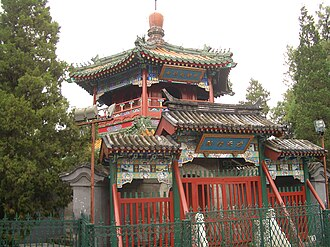

Apresentação
La Mosquée de Niujie fut construite en 996 par Nazruddin, un savant arabe fonctionnaire de la dynastie Liao (Khitans) dans leur ce qui était alors leur capitale du Sud, nommée alors Nanjing. C'est la plus vieille et plus grande mosquée de Pékin. L'édifice a été agrandi et rénové sous les dynasties Yuan, Ming et Qing et se caractérise par sa disposition symétrique orientée est-ouest. Étendue sur 6 000 m2, la mosquée est un mélange d'architectures chinoise et orientale qui abrite deux salles des prières, pour les hommes et pour les femmes, qui peuvent accueillir 1000 personnes, une tour observatoire, un minaret, une salle de lecture, une salle d'Écritures Saintes et un hammam. Depuis la proclamation de la République populaire de Chine en 1949, la mosquée a subi des travaux de rénovations en 1955, 1979 et 1996.
مسجد نيوجيه ومعناه مسجد شارع البقر ذلك أن المسلمين كانوا متفردين بذبح البقر عكس بقية جيرانهم من الصينيين الذين كانوا يذبحون الخنازير. يعتبر نيوجيرسي من أهم مناطق بكين التي تتركز فيها طقوس الذبح الإسلامية، وقد اشتق الشارع اسمه لكونه ظل مكانًا لتجارة الأبقار –وهي التجارة التي سيطر عليها المسلمون لقرون من الزمن- في بكين.
The Niujie Mosque, also known as the Oxen Street House of Worship, or the Oxen Street Mosque, is the oldest mosque in Beijing, China.
Niujie Camii, Çin'in başkenti Pekin'de bulunan bir camidir. Camii, Xicheng'de Niujie mahallesinde yer almakta olup kentin en eski camisidir. MS 996 yılında Liao Hanedanı döneminde inşa edilmiş olup Qing Hanedanı döneminde İmparator Kangxi yönetiminde restore edilmiştir.
Masjid Niujie adalah sebuah masjid bersejarah yang terletak di Beijing, Republik Rakyat Tiongkok. Masjid yang telah mengalami renovasi dan perluasan beberapa kali ini merupakan pusat komunitas Muslim Beijing yang jumlahnya mencapai 200 ribu jiwa. Arsitekturnya memperlihatkan campuran desain khas Tiongkok-Islam. Masjid terbesar di Beijing ini juga menjadi titik awal masuknya Islam di daratan Tiongkok.
نیوجیہ مسجد چین کے دار الحکومت بیجنگ کی سب سے قدیم مسجد ہے جو 996ء میں تعمیر ہوئی۔
Die Niujie-Moschee, die im Chinesischen auch als Niujie Qingzhensi (牛街清真寺) und als Mingsi (明寺) bezeichnet wird, ist die im Pekinger Stadtbezirk Xuanwu auf der Niujie 88 („Rinderstraße“) gelegene Moschee. Es ist die älteste Moschee der Stadt.
La Mezquita de Niujie, es la mezquita más antigua de Pekín, China. Fue construida en 996 y reconstruida y ampliada bajo el mandato del emperador Kangxi (1622-1722).
La moschea di Niujie è la più antica e più grande moschea di Pechino, costruita nel 996 da Nazruddin, un funzionario arabo della dinastia Liao. L'edificio fu in seguito ricostruito e ingrandito sotto la dinastia Yuan, la dinastia Ming e la dinastia Qing.
Niujiemoskee is de oudste moskee in Beijing, China. Het werd in 996 gebouwd en de moskee werd groter tijdens de regeerperiode van keizer Kangxi (1661-1722).
牛街礼拜寺，位于北京市西城区牛街街道牛街18号，是北京市历史最悠久、规模最大的清真寺，也是世界著名清真寺之一。牛街礼拜寺是全国重点文物保护单位。
牛街清真寺（ぎゅうがいせいしんじ）は中華人民共和国北京市西城区牛街に位置するモスク。現存する北京市最古のモスクである。周辺に住む一万人に及ぶムスリム（回族）の精神的な中心地である。また、牛街付近は北京の回族が居住する最大のエリアでもある。
Мечеть Нюцзе — самая большая и старая мечеть Пекина. Была заложена в 996 году в юго-западном районе Сюаньу, который издревле населяли китайские мусульмане. Приняла вид, близкий к нынешнему, при императоре Канси в начале XVIII века. Мечеть площадью 6 тыс. кв. м. поновлялась в 1955, 1979 и 1996 годах. За традиционной китайской архитектурой скрываются помещения, обустроенные в соответствии с исламскими традициями.
มัสยิดหนิวเจีย เป็นมัสยิดที่เก่าแก่ที่สุดในปักกิ่ง ประเทศจีน สร้างขึ้นเมื่อ ค.ศ. 996 ได้บูรณปฏิสังขรณ์และต่อมาก็ได้ขยับขยายในรัชสมัยของจักรพรรดิคังซีแห่งราชวงศ์ชิง
Moscheea Niujie, este cea mai veche moschee din Beijing, China. Ea a fost clădită în timpul dinastiei mongole Kitan (Liao) (916-1125) fiind în anul 996 o clădire mai mică, care a fost ulterior extinsă în timpul dinastiilor mongole și a dinastiei chineze Qing.
No mapa
Documentos e ligações
- Wikipédia — Français
- Wikipédia — العربية
- Wikipédia — English
- Wikipédia — Türkçe
- Wikipédia — Bahasa Indonesia
- Wikipédia — اردو
- Wikipédia — Deutsch
- Wikipédia — Español
- Wikipédia — Italiano
- Wikipédia — Nederlands
- Wikipédia — 中文
- Wikipédia — 日本語
- Wikipédia — Русский
- Wikipédia — ไทย
- Wikipédia — Română
- Wikidata — Q603256
Dados: Wikidata (CC0), atualizados de 3 em 3 meses. O ano é a data de construção mais antiga conhecida do edifício: para um edifício que se tornou mesquita mais tarde (como Santa Sofia), é a do edifício original. Fotos: Wikimedia Commons, autor e licença na página de cada foto.